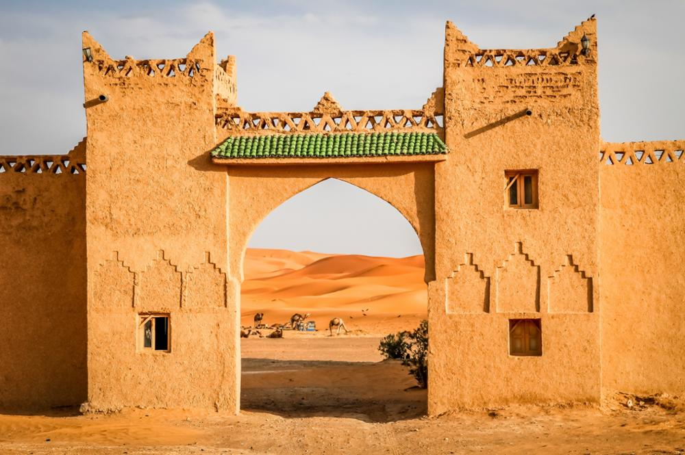
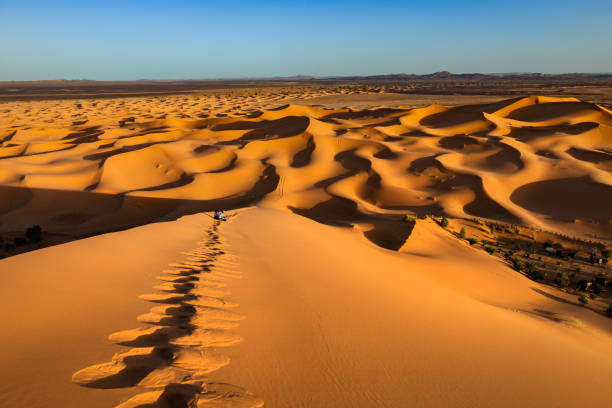
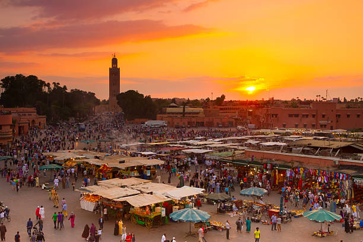
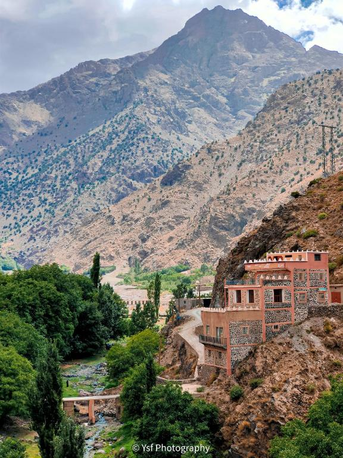
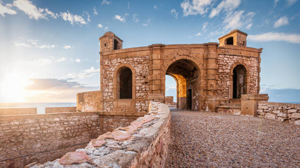
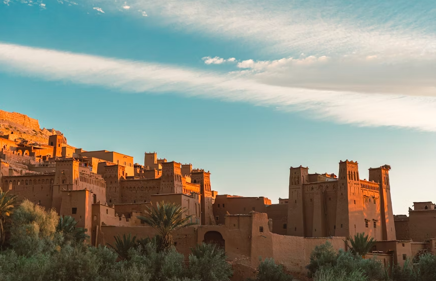
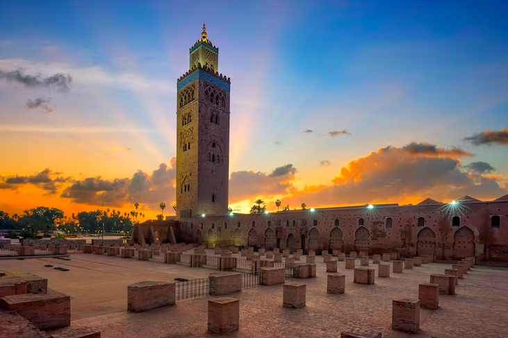
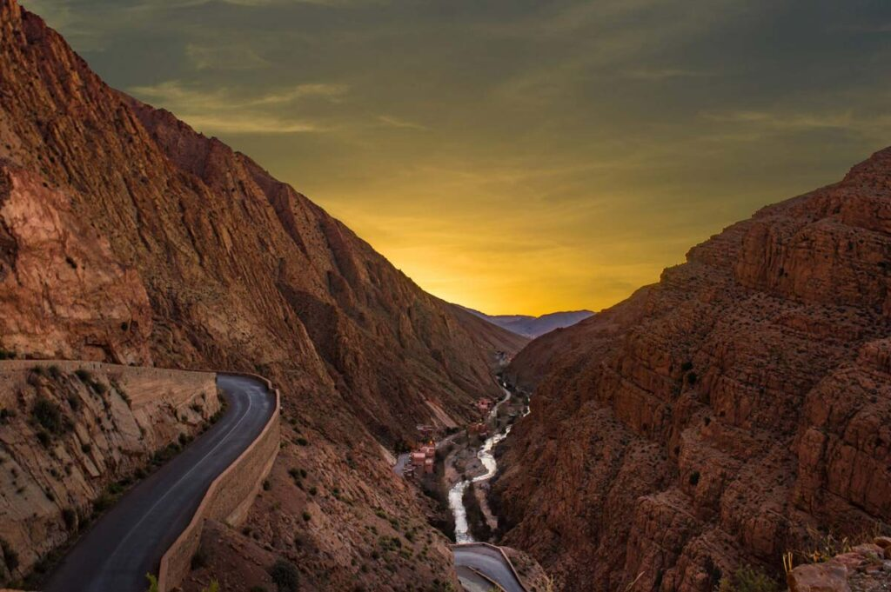

Experience the Kingdom beyond the tourist trail. Private chauffeur-driven Mercedes vehicles, handpicked luxury riads, silent Sahara desert glamping, and authentic Berber native guides.

From silent sand dunes under milky way skies to the bustling aromatic alleyways of medieval riads, choose your expedition.
Venture deep into the golden Erg Chebbi dunes of Merzouga. Travel in luxury air-conditioned private vehicles through ancient fortified kasbahs, watch breathtaking golden sunsets from camelback, and spend the night in private luxury desert tents featuring ensuite bathrooms, hot showers, and traditional Berber music around the campfire.

Step through centuries of royal architecture in Marrakech, Fès, and the blue pearl of Chefchaouen. Unlock private courtyards, secret rooftop terraces, vibrant artisan quarters, and 1,000-year-old tanneries with our licensed heritage scholars.

Ascend the snow-capped High Atlas Mountains into the heart of ancestral Berber culture. Discover lush walnut groves, roaring waterfalls in Ourika, and traditional adobe villages in Imlil beneath North Africa's highest summit, Mount Toubkal.

Breathe the fresh Atlantic air in Essaouira, the historic fortified port town with whitewashed walls, cobalt blue shutters, and world-class grilled seafood. Explore historic Portuguese ramparts, artisan thuya wood workshops, and expansive coastal beaches.

Configure your departure city, trip duration, and preferred travel pace. Our simulator builds an instant custom itinerary ready to send to our Marrakech concierge.
Our signature route: Cross Tizi n'Tichka, explore Ait Ben Haddou Kasbah, Todra Gorges, and spend an unforgettable night in luxury Sahara desert glamping.
Every expedition is engineered from the ground up to give you effortless luxury, safety, and deep cultural connection.
Travel without fatigue. Every kilometer is spent in a dedicated Mercedes V-Class or luxury 4x4 with plush leather seating, high-power climate control, onboard Wi-Fi, and cold mineral water. No shared buses, no fixed group schedules.

Our drivers and guides are born and raised in the regions you visit. They open doors to private artisan workshops, decode centuries of history, and speak fluent English, French, and Arabic.

We partner exclusively with independent boutique riads and premier luxury desert camps. Enjoy private plunge pools, hand-carved cedar ceilings, organic traditional Moroccan breakfasts, and starlit suites.

From the moment your flight lands in Morocco until your departure gate, your dedicated travel coordinator is one tap away on WhatsApp. Restaurant reservations, route modifications, or special requests handled instantly.
Read firsthand accounts from guests who discovered Morocco through our private bespoke journeys.
"The Merzouga desert camp was like stepping into another world. The private Mercedes van was spotless and our driver, Hassan, felt like family within hours. Absolutely top-tier service."
"Chefchaouen and Fès were breathtaking. Having our own private guide meant zero stress in the crowded medinas and access to hidden rooftop gardens we would never have found ourselves."
"Flawless logistics from start to finish. We customized our 10-day trip with kids and the pacing was perfect. The concierge on WhatsApp answered every question in minutes. 10/10."